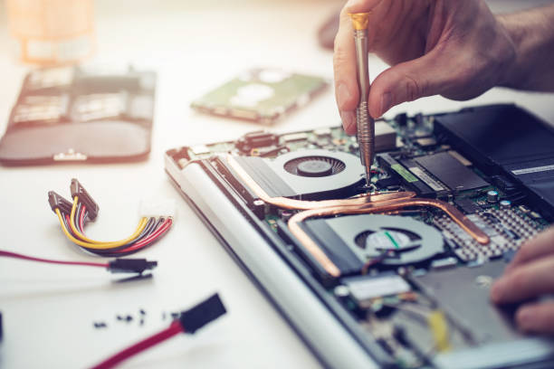

Donate a Device. Change a Future.
Transforming Unused Technology into Opportunities for Education, Innovation, and Inclusion
Technology has become one of the most powerful tools for education, communication, innovation, and economic empowerment. It enables teachers to deliver engaging lessons, students to access knowledge beyond the classroom, entrepreneurs to grow businesses, and communities to connect with new opportunities.
Yet, for many people across Nigeria, access to technology remains one of the greatest barriers to reaching their full potential. At the same time, thousands of laptops, tablets, and desktop computers sit unused in homes, offices, schools, and businesses, even though many remain suitable for educational use.
The Donate a Device – Change a Future Campaign bridges this gap by collecting, refurbishing, and redistributing digital devices to the people and communities who need them most. Every donated device becomes an opportunity to learn, innovate, and build a brighter future.


Why This Campaign Matters
Technology Should Create Opportunities, Not Barriers
We live in a digital world where education, employment, entrepreneurship, healthcare, and financial services increasingly depend on access to technology. Yet millions of people are still excluded because they simply do not have the digital tools they need to participate.
By redistributing donated devices, we help create pathways to education, innovation, employment, and lifelong learning while ensuring technology becomes a bridge to opportunity rather than a barrier.
Our Goal
Building a Community-Driven Digital Future
Our goal is to create a sustainable ecosystem where individuals, businesses, educational institutions, government agencies, and development partners work together to ensure functional digital devices reach the people who need them most.
Expand Access
Increase access to digital technology for underserved communities.
Promote Literacy
Support digital literacy and responsible technology use.
Reduce E-Waste
Extend the life of valuable technology through refurbishment.
Create Opportunities
Help learners, educators, and communities thrive in a digital world.
Our Objectives
What We Aim to Achieve
- Collect used, unused, and faulty digital devices.
- Professionally assess and refurbish donated equipment.
- Expand access to technology for underserved communities.
- Strengthen schools and community learning centres.
- Promote digital literacy and online safety.
- Reduce electronic waste through responsible reuse.
- Build partnerships that strengthen digital inclusion.
- Share transparent reports and campaign impact.
How the Campaign Works
From Donation to Lasting Impact
Every donated device follows a carefully managed journey to ensure it reaches the people who will benefit from it the most.
Device Donation
Individuals, businesses, schools, government institutions, and organizations donate laptops, desktops, tablets, accessories, networking equipment, and other educational technology devices.
Device Assessment
Every donated device is inspected to evaluate its condition, repair requirements, upgrade opportunities, and suitability for educational use.
Secure Data Wiping & Refurbishment
Devices undergo secure data removal, repairs, hardware upgrades, software installation, security updates, and quality testing before distribution.
Beneficiary Selection
Devices are allocated through a transparent, needs-based process that prioritizes educators, students, youth, women, persons with disabilities, and underserved communities.
Distribution & Capacity Building
Beneficiaries receive their devices along with digital literacy, online safety guidance, and support that helps them make the most of the technology.
Monitoring & Impact
We monitor outcomes, collect feedback, document success stories, and share campaign updates so donors and partners can see the impact of every contribution.
What Can Be Donated?
We Welcome a Wide Range of Digital Devices
Devices may be new, gently used, or faulty. Every item is assessed to determine whether it can be refurbished or responsibly recycled.
Laptops
Desktop Computers
Tablets
Monitors
Chargers & Adapters
Keyboards & Mice
External Storage
Networking Equipment
Other Educational Technology
Who Benefits?
Creating Opportunities for Individuals and Communities
The campaign supports people and institutions where access to technology can create lasting educational, economic, and social impact.
Teachers
Helping educators prepare digital lessons, access teaching resources, participate in professional development, and improve classroom learning.
Students & Youth
Providing the tools needed to study, conduct research, build digital skills, complete assignments, and prepare for future careers.
Women & Girls
Expanding access to education, entrepreneurship, financial inclusion, and lifelong learning through technology.
Persons with Disabilities
Supporting communication, accessibility, education, employment, and greater participation through inclusive technology.
Schools & Learning Centres
Strengthening classrooms and community learning centres with shared digital resources that improve teaching and learning.
Communities
Creating wider access to digital knowledge, innovation, collaboration, and long-term community development.

More Than Device Donations
There Are Many Ways to Support the Campaign
Lasting impact requires more than donated devices. Individuals, businesses, and organizations can strengthen the campaign in many different ways.
- Financial support for refurbishment and logistics.
- Volunteer technical expertise.
- Corporate sponsorships and partnerships.
- Software licensing and technology support.
- Internet connectivity solutions.
- Digital literacy training.
- Community outreach and advocacy.
Sustainability
Supporting People and Protecting the Planet
Every refurbished device extends the life of valuable technology, reduces unnecessary electronic waste, and promotes responsible consumption.
By giving technology a second life, we create opportunities for learners while helping to conserve resources and reduce the environmental impact of discarded electronics.
A Movement Built on Partnership
Real Change Happens When Communities Work Together
We welcome individuals, businesses, educational institutions, government agencies, technology companies, civil society organizations, and development partners to help expand digital access across Nigeria.